Welcome to the Windows install page for Together. Here is the link to the file that will install Together on your Windows computer: Together Setup
Together supports Windows 7 and later.
For the Mac, go here
For Linux, go here
Together does not currently have a version for Chromebook, Android, or iOS (iPhone/iPad).
Download the setup file linked at the top of this page. This file is small and will download quickly. When you double-click on it, a setup program will start that downloads and installs the Together launcher. If you feel comfortable without further instructions, then you don’t need to read the long version. In that case, some key things you need to know are:
These instructions apply specifically to PC computers running Windows 10. Earlier versions of Windows will not show the Windows Defender warnings below.
When you clicked on the Together Setup link at the top of this page, your web browser downloaded it. You can see it at the bottom of your browser window or find it in your Downloads directory. Double-click on Together Setup.exe to run it. Windows Defender will pop up up the following warning:
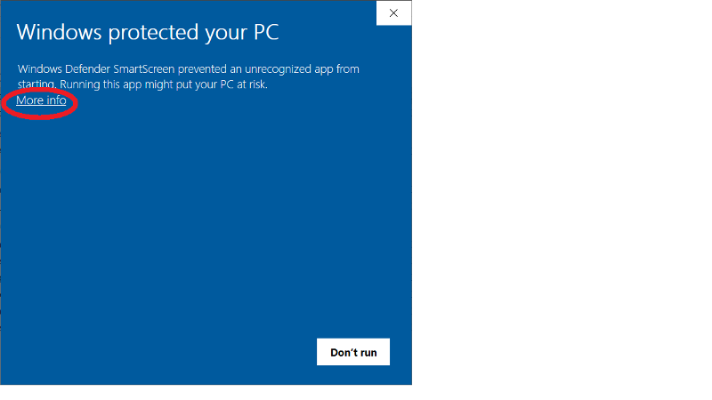This happens because we have not signed our software with an official code-signing authority. Code-signing is a way for you to know that a company is who they claim to be. We, the creators of Together, are not a company and we have no way to register with such an authority. If you use Windows and you install software, then you have to decide for yourself whether to proceed. It's like: I cannot tell you to disregard the warnings that Windows gives you for your safety because software from an unknown source can be dangerous. At the same time, I know that our software is not dangerous. If you choose to proceed, then follow the instructions below.
Click on More info and you will see this window allowing you to proceed with the install:
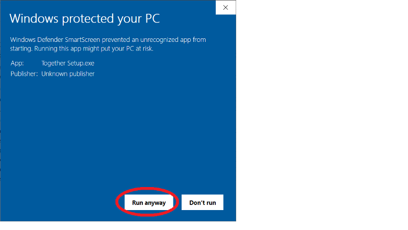Click on Run anyway and the Together installation will begin:
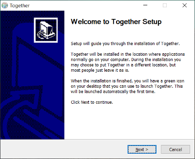When you click Next, you will see a screen that allows you to change the directory where Together will be installed on your computer. It’s best if you leave it where it is. Note that you can move the entire Together directory wherever you like after the install.
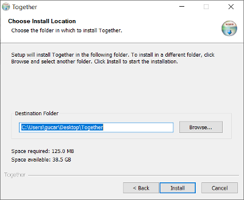Then you will see the final install screen:
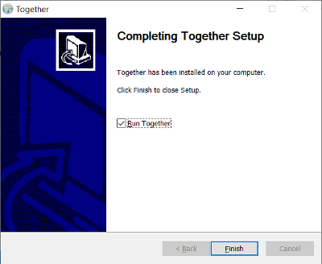When you click Finish, Together Setup will contact our server to download Together proper which is quite large. Depending on your antivirus, various dialogs might pop up before this happens. Some of them disappear with no explanation and allow the next step to proceed. If you see the following one, then check that your internet connection is working by bringing something up in a web browser:
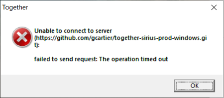Once you have verified that you have a working internet, click OK.
Together will show its launcher with a red bar indicating the progress of the update. This update can take a long time the first time because it is downloading everything that you need to run Together. Next time Together will download only the things that have changed, which will happen quickly.
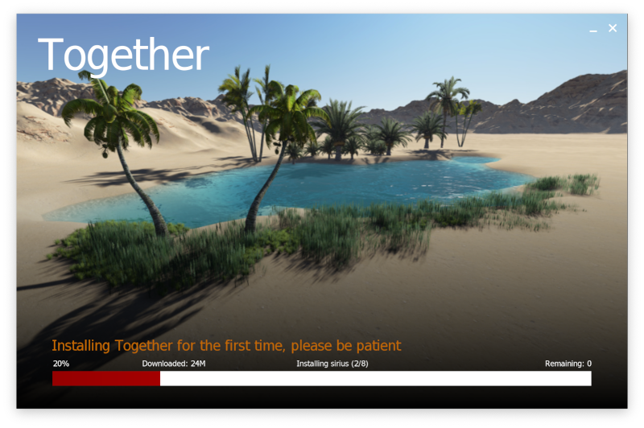When the update is finished, the Welcome screen will appear. This screen asks you to enter your invitation word. This is a word you were given when you were invited to Together. You must also enter your name. This is the name that will be displayed to other people in Together, so it should be the real name you want people to call you:
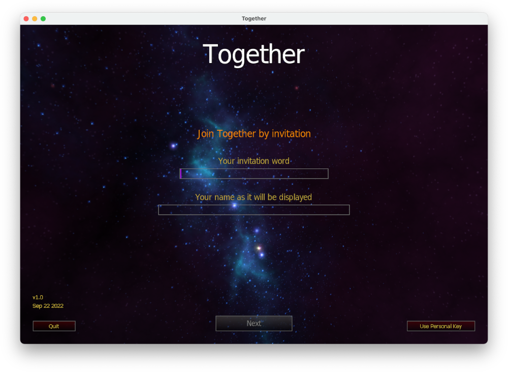If your invitation is valid, Together will generate for you a Personal Key. This is private to you and will be automatically loaded next time you start Together.
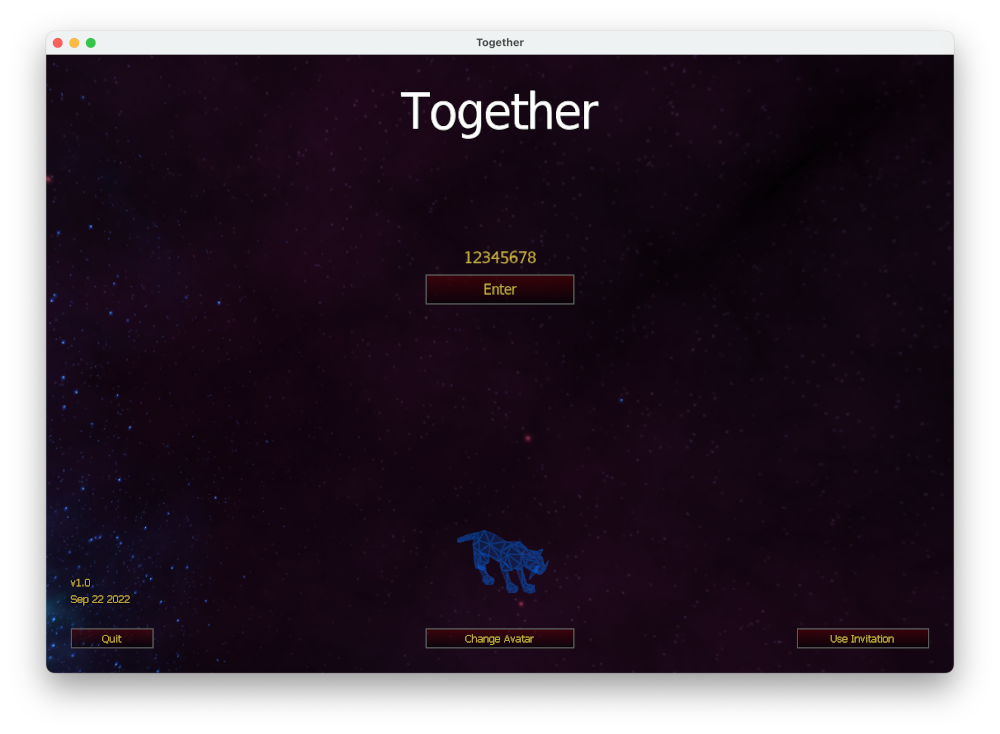Now Together is fully installed. Press Enter to go to The gathering, where someone can verify that you are a person they know: 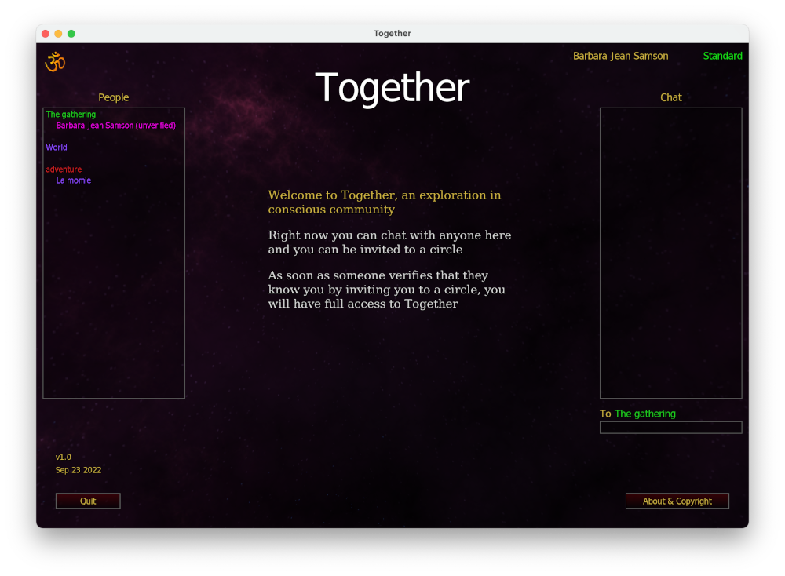 Poke around and have fun, or read about it here.
From now on you will always launch Together by clicking the green icon. We suggest you drag it to your dock for quick access:
While Together is running, it will show up as a blue icon on your toolbar:
Some antivirus applications have to be turned off during the initial install. Below is a message from Avast (free version) when I tried to start Together Setup.exe:
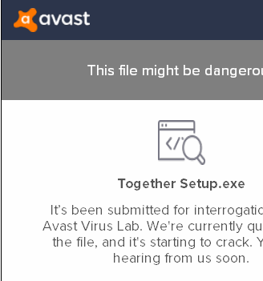If something like this comes up, deactivate your antivirus application while you install Together for the first time. When you reach the name entry screen, quit Together and then reactivate your antivirus application. Let me repeat that. Turn your antivirus protection back on so that it keeps protecting your computer. Then launch Together from the green icon:
Note that the first time you start Together with the antivirus activated it will take up to 5 minutes to load the name entry screen. From then on it will load immediately. There will be no further need to deactivate your antivirus application.
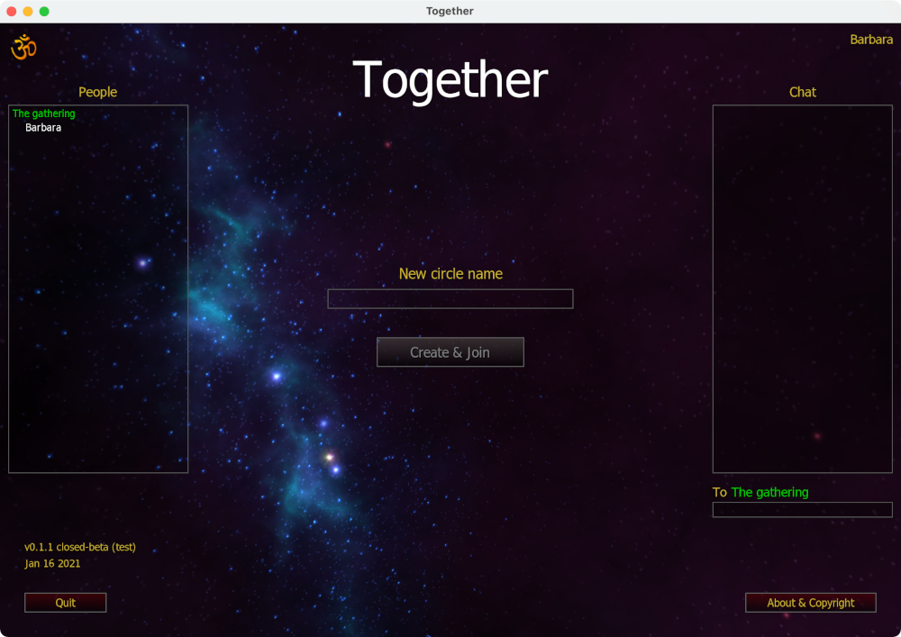